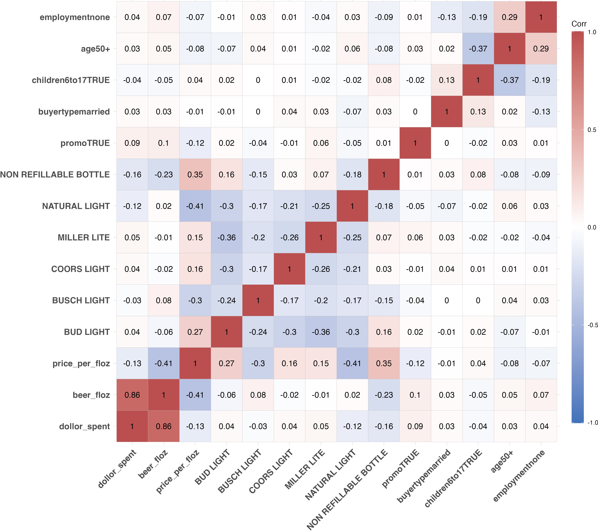
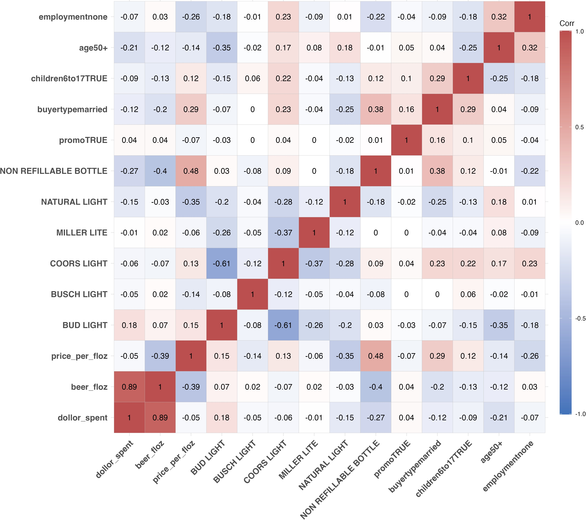

hdi_corruption <- read_csv(
'https://bcdanl.github.io/data/hdi_corruption.csv')DANL 310: Data Visualization and Presentation
Homework Assignment 2 - Example Answers -
Question 1
Add a web-page of the team project proposal to your website. The tab menu to link the web-page must be provided.
Question 2
Provide ggplot codes to replicate the given figure.
Q2a.
Use the following data.frame for Q2a, Q2b, and Q2c.
# Use geom_smooth(method = lm, formula = "y ~ log(x)", se = F) .
# `box.padding` option would be useful for geom_text_repel().
country_highlight <- c("Germany", "Norway", "United States",
"Greece", "Singapore",
"Argentina", "Senegal",
"China", "Egypt", "South Africa")
corruption <- hdi_corruption %>%
mutate(label = ifelse(country %in% country_highlight, country, NA))
ggplot(data = filter(corruption, year == 2014), aes(cpi, hdi)) +
geom_smooth(method = lm, formula = "y ~ log(x)", se = F) +
geom_point(
aes(color = region, fill = region),
size = 2.5, alpha = 0.5, shape = 21
) +
geom_text_repel(
aes(label = label), color = "black", size = 4,
box.padding = .75
) +
scale_y_continuous(
limits = c(0.3, 1.05), breaks = c(0.2, 0.4, 0.6, 0.8, 1.0),
name = "Human Development Index, 2014\n(1.0 = most developed)"
) +
scale_x_continuous(
limits = c(10, 95),
breaks = c(20, 40, 60, 80, 100),
name = "Corruption Perceptions Index, 2014 (100 = least corrupt)"
) +
theme_minimal() +
theme(
plot.margin = unit( c(1.75, .75, .75, .5), "cm"),
legend.position = c(.5, 1.05),
legend.direction = "horizontal",
legend.text = element_text(size = 10)
) +
labs( color = "Region", fill = "Region") 
Q2b
Download the file
labor_supply.zipfrom the Data folder in the Files section in Canvas. Then, extractlabor_supply.zip, so that you can access thelabor_supply.csvfile.Variable description in
labor_supply.csvSEX: 1 if Male; 2 if Female; 9 if NIU (Not in universe)NCHLT5: Number of own children under age 5 in a household; 9 if 9+LABFORCE: 0 if NIU or members of the armed forces; 1 if not in the labor force; 2 if in the labor force.ASECWT: sample weight
A sample weight of each observation means how much population each observation represents.
- If you sum
ASECWTfor each year, you get the size of yearly population in the US.
- If you sum
Households with
LABFORCE == 0is not in labor force.Labor force participation rate can be calculated by:
\[ (\text{Labor Force Participation Rate}) \, = \, \frac{(\text{Size of population in labor force})}{(\text{Size of civilian population that are not members of the armed force})} \]
path <- '/Users/byeong-hakchoe/Google Drive/suny-geneseo/teaching-materials/lecture-data/labor_supply.csv'
cps_labor <- read_csv(path)
cps_labor <- cps_labor %>%
filter(YEAR >= 1982) %>%
filter(LABFORCE != 0) %>%
mutate(LABFORCE = LABFORCE - 1) %>%
mutate(labor_supply = LABFORCE * ASECWT,
child = ifelse(NCHLT5 == 0,
"No Child Under Age 5 in Household",
"Having Children Under Age 5 in Household")) %>%
group_by(YEAR, SEX, child) %>%
summarize(pct = sum(labor_supply) / sum(ASECWT, na.rm= T) ) %>%
filter(!is.na(child))
label_df <- filter(cps_labor, YEAR == 2022) %>%
mutate(label = ifelse(SEX == 1, "Male", "Female"))
ggplot(data = cps_labor,
aes(x = YEAR, y = pct,
color = factor(SEX))) +
geom_line(size = 1.5) +
geom_label_repel(data = label_df,
aes(x = YEAR, y = pct, label = label),
color = 'black',
nudge_y = .033, box.padding = .5) +
facet_grid( . ~ factor(child)) +
scale_x_continuous( breaks = seq(1982, 2022, 4) ) +
scale_y_continuous( labels = scales::percent) +
scale_color_manual( labels = c("Male", "Female"),
values = c("#2E74C0", "#CB454A") ) +
labs(x = "Year",
y = "Labor Force Participation Rate",
color = "Gender",
lty = "Young Children",
title = "Fertility and Labor Supply in the U.S.",
subtitle = "1982-2022",
caption = "Data: IPUMS-CPS, University of Minnesota, www.ipums.org.") + guides(color = "none") +
theme_ipsum() +
theme(axis.title.y = element_text(size = rel(1.5),
face = 'bold'),
axis.text.x = element_text(angle = 45))
Q2c
library(ggcorrplot) # to create correlation heatmaps using ggcorrplot()
beer_mkt <- read_csv('https://bcdanl.github.io/data/beer_markets.csv')- Make a correlation heat-map with variables that are either strongly correlated or
promo-related. - The variables are selected by how high the mean value of the absolute value of correlations with the variable is (top 13-15 variables).
- You can start with the following data.frame:
beer_dummies <- beer_mkt %>% select(-hh, -market)
reg <- lm(data = beer_dummies,
beer_floz ~ .)
beer_dummies <- as.data.frame(model.matrix(reg))[, -1]
beer_dummies <- cbind(beer_mkt$beer_floz ,beer_dummies)
beer_dummies <- beer_dummies %>%
rename(beer_floz = `beer_mkt$beer_floz`)- To calculate a correlation between numeric variables in
data.frame, usecor(data.frame)
beer_dummies <- beer_dummies %>%
mutate(`brandBUD LIGHT` =
ifelse(`brandBUSCH LIGHT` == 1 |
`brandCOORS LIGHT` == 1 |
`brandMILLER LITE` == 1 |
`brandNATURAL LIGHT` == 1, 0, 1)) %>%
select(dollar_spent, ends_with("floz"),
quantity, `brandBUD LIGHT`,
starts_with("brand"), everything())
# the correlation matrix
cor_beer <- cor(beer_dummies)
# to select variables with high correlations
cor_beer_abs <- abs(cor_beer)
cor_beer_abs <- cor_beer_abs %>% as_tibble()
cor_beer_mean <- cor_beer_abs %>%
summarise_if(is.numeric, mean)
cor_beer_mean <- t(cor_beer_mean) # transpose
cor_beer_mean <- cbind(cor_beer_mean, rownames(cor_beer_mean))
cor_beer_mean <- cor_beer_mean %>%
as_tibble()
cor_beer_mean <- cor_beer_mean %>%
mutate(V1 = as.numeric(V1)) %>%
arrange(-V1)
cor_beer_mean <- cor_beer_mean %>%
rename(cor_mean = V1,
var_name = V2)
cor_beer_mean <- cor_beer_mean %>%
mutate(ranking = dense_rank(-cor_mean))
cor_beer_mean_selected <- cor_beer_mean %>%
filter(ranking <= 15 | str_detect(var_name, "promo") )
df_cor_beer <- as.data.frame(cor_beer)
df_cor_beer <- df_cor_beer %>%
mutate(var = rownames(df_cor_beer))
cor_beer_selected <- df_cor_beer %>%
filter(var %in% cor_beer_mean_selected$var_name ) %>%
select(-var)
cor_beer_selected2 <- t(cor_beer_selected)
cor_beer_selected2 <- as.data.frame(cor_beer_selected2) %>%
mutate(var = rownames(cor_beer_selected2))
cor_beer_selected2 <- cor_beer_selected2 %>%
filter(var %in% cor_beer_mean_selected$var_name ) %>%
select(-var)
# p values for correlation tests
# p.mat <- cor_pmat(cor_beer_selected2)
# Tentatively trying to make correlation heatmaps
# ggcorrplot( cor_beer_selected2, lab = T,
# type = 'lower',
# colors = c("#2E74C0", "white", "#CB454A"),
# )
# colnames(cor_beer_selected2)
# finalizing variables
cor_beer_selected3 <- cor_beer_selected2 %>%
select(-starts_with("cow"))
cor_beer_selected3 <- t(cor_beer_selected3) # transpose
cor_beer_selected3 <- as.data.frame(cor_beer_selected3) %>%
select(-starts_with("cow"))
# rownames and colnames
var_list <- colnames(cor_beer_selected3)
varlist <- rownames(cor_beer_selected3)
varlist <- str_replace_all(varlist,
"brand", "")
varlist <- str_replace_all(varlist,
"container", "")
rownames(cor_beer_selected3) <- varlist
varlist <- colnames(cor_beer_selected3)
varlist <- str_replace_all(varlist,
"brand", "")
varlist <- str_replace_all(varlist,
"container", "")
colnames(cor_beer_selected3) <- varlist
# correlation heatmap with correlation values
p <- ggcorrplot( cor_beer_selected3, lab = T,
colors = c("#2E74C0", "white", "#CB454A"),
) +
theme(axis.text = element_text(size = rel(1.5),
face = 'bold')) +
guides(fill = guide_colourbar(barheight = 38.5))
p
# for NY ------------------------------------------------------------------
beer_dummies <- beer_mkt %>%
filter(str_detect(market, "NY") |
str_detect(market, "NEW YORK") |
str_detect(market, "ALBANY") |
str_detect(market, "BUFFALO-ROCHESTER") |
str_detect(market, "SYRACUSE")
) %>%
select(-hh, -market)
reg <- lm(data = beer_dummies,
beer_floz ~ .)
beer_mkt_NY <- beer_mkt %>%
filter(str_detect(market, "NY") |
str_detect(market, "NEW YORK") |
str_detect(market, "ALBANY") |
str_detect(market, "BUFFALO-ROCHESTER") |
str_detect(market, "SYRACUSE")
) %>%
select(beer_floz)
beer_dummies_tmp <- as.data.frame(model.matrix(reg))[, -1]
beer_dummies <- cbind(beer_mkt_NY,
beer_dummies_tmp)
beer_dummies <- beer_dummies %>%
mutate(`brandBUD LIGHT` =
ifelse(`brandBUSCH LIGHT` == 1 |
`brandCOORS LIGHT` == 1 |
`brandMILLER LITE` == 1 |
`brandNATURAL LIGHT` == 1, 0, 1)) %>%
select(dollar_spent, ends_with("floz"),
quantity, `brandBUD LIGHT`,
starts_with("brand"), everything())
# the matrix of the correlation test p-values
cor_beer <- cor(beer_dummies)
cor_beer_abs <- abs(cor_beer)
cor_beer_abs <- cor_beer_abs %>% as_tibble()
cor_beer_mean <- cor_beer_abs %>%
summarise_if(is.numeric, mean)
cor_beer_mean <- t(cor_beer_mean)
cor_beer_mean <- cbind(cor_beer_mean, rownames(cor_beer_mean))
cor_beer_mean <- cor_beer_mean %>%
as_tibble()
cor_beer_mean <- cor_beer_mean %>%
mutate(V1 = as.numeric(V1)) %>%
arrange(-V1)
cor_beer_mean <- cor_beer_mean %>%
rename(cor_mean = V1,
var_name = V2)
cor_beer_mean <- cor_beer_mean %>%
mutate(ranking = dense_rank(-cor_mean))
cor_beer_mean_selected <- cor_beer_mean %>%
filter(var_name %in% var_list )
df_cor_beer <- as.data.frame(cor_beer)
df_cor_beer <- df_cor_beer %>%
mutate(var = rownames(df_cor_beer))
cor_beer_selected <- df_cor_beer %>%
filter(var %in% cor_beer_mean_selected$var_name ) %>%
select(-var)
cor_beer_selected2 <- t(cor_beer_selected)
cor_beer_selected2 <- as.data.frame(cor_beer_selected2) %>%
mutate(var = rownames(cor_beer_selected2))
cor_beer_selected2 <- cor_beer_selected2 %>%
filter(var %in% cor_beer_mean_selected$var_name ) %>%
select(-var)
# p values for correlation test
# p.mat <- cor_pmat(cor_beer_selected2)
# temporary correlation heatmap with correlation values
# ggcorrplot( cor_beer_selected2, lab = T,
# type = 'lower',
# colors = c("#2E74C0", "white", "#CB454A"),
# ) +
# guides(fill = guide_colourbar(barheight = 38.5))
#
# colnames(cor_beer_selected2)
cor_beer_selected3 <- cor_beer_selected2 %>%
select(-starts_with("cow"))
cor_beer_selected3 <- t(cor_beer_selected3)
cor_beer_selected3 <- as.data.frame(cor_beer_selected3) %>%
select(-starts_with("cow"))
varlist <- rownames(cor_beer_selected3)
varlist <- str_replace_all(varlist,
"brand", "")
varlist <- str_replace_all(varlist,
"container", "")
rownames(cor_beer_selected3) <- varlist
colnames(cor_beer_selected3)
varlist <- colnames(cor_beer_selected3)
varlist <- str_replace_all(varlist,
"brand", "")
varlist <- str_replace_all(varlist,
"container", "")
colnames(cor_beer_selected3) <- varlist
# correlation heatmap with correlation values
p <- ggcorrplot( cor_beer_selected3, lab = T,
colors = c("#2E74C0", "white", "#CB454A"),
) +
theme(axis.text = element_text(size = rel(1.5),
face = 'bold')) +
guides(fill = guide_colourbar(barheight = 38.5))
# p.values
pknitr::include_graphics('lec_figs/beer_cor.jpg')
Then, make a correlation heat-map for NY markets with the same selection of variables.
NY markets are such that whose
marketvalue is eitherALBANY,BUFFALO-ROCHESTER,URBAN NY,SUBURBAN NY,EXURBAN NY,RURAL NEW YORK, orSYRACUSE.
knitr::include_graphics('lec_figs/beer_cor_ny.jpg')
References: